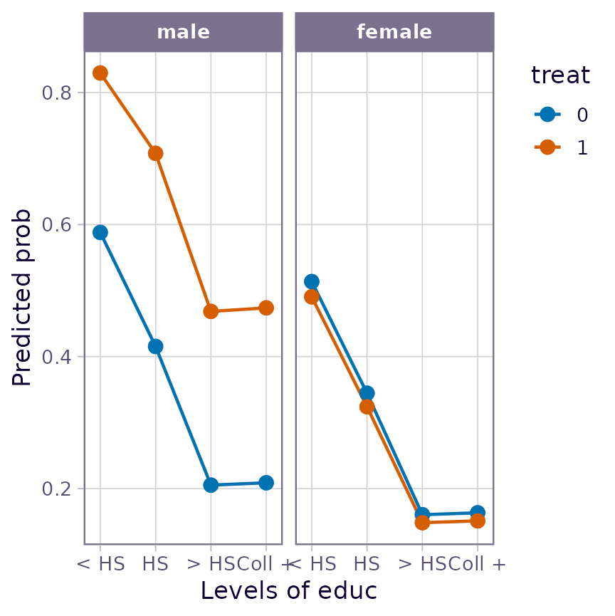
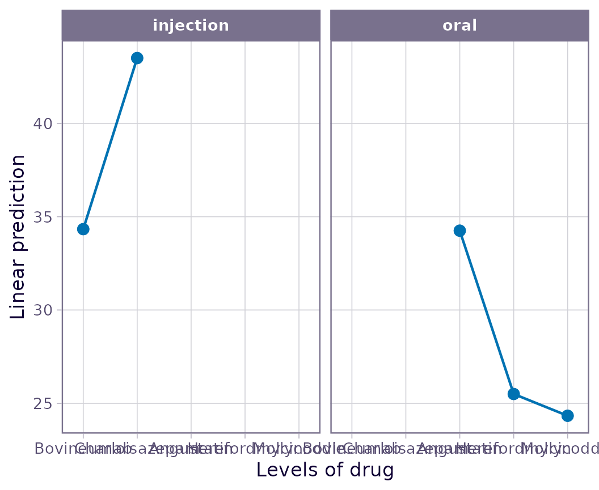
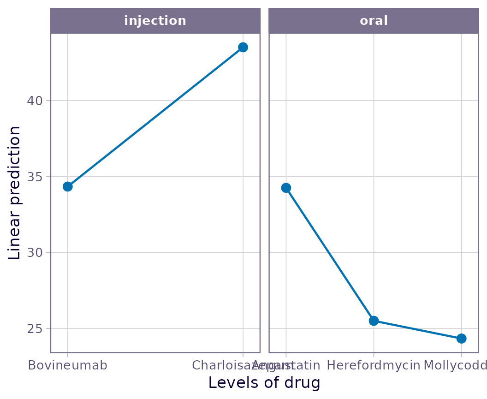
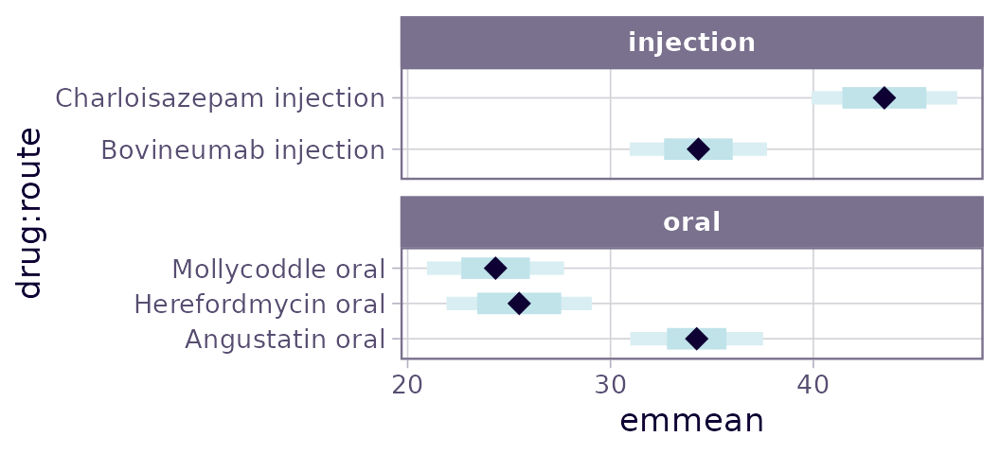

Working with messy data
emmeans package, Version 1.10.6.90003
Source:vignettes/messy-data.Rmd
messy-data.RmdContents
Issues with observational data
In experiments, we control the conditions under which observations are made. Ideally, this leads to balanced datasets and clear inferences about the effects of those experimental conditions. In observational data, factor levels are observed rather than controlled, and in the analysis we control for those factors and covariates. It is possible that some factors and covariates lie in the causal path for other predictors. Observational studies can be designed in ways to mitigate some of these issues; but often we are left with a mess. Using EMMs does not solve the inherent problems in messy, undesigned studies; but they do give us ways to compensate for imbalance in the data, and allow us to estimate meaningful effects after carefully considering the ways in which they can be confounded.
As an illustration, consider the nutrition dataset
provided with the package. These data are used as an example in Milliken
and Johnson (1992), Analysis of Messy Data, and contain the
results of an observational study on nutrition education. Low-income
mothers are classified by race, age category, and whether or not they
received food stamps (the group factor); and the response
variable is a gain score (post minus pre scores) after completing a
nutrition training program. First, let’s fit a model than includes all
main effects and 2-way interactions, and obtain its “type II” ANOVA:
## Note: model has aliased coefficients
## sums of squares computed by model comparison## Anova Table (Type II tests)
##
## Response: gain
## Sum Sq Df F value Pr(>F)
## age 82.37 3 0.9614 0.4145
## group 658.13 1 23.0441 6.105e-06
## race 11.17 2 0.1956 0.8227
## age:group 91.58 3 1.0688 0.3663
## age:race 87.30 3 1.0189 0.3880
## group:race 113.70 2 1.9906 0.1424
## Residuals 2627.47 92There is definitely a group effect and a hint of and
interaction with race. Here are the EMMs for those two
factors, along with their counts:
## group race emmean SE df n lower.CL upper.CL
## FoodStamps Black 4.71 2.37 92 7 0.00497 9.41
## NoAid Black -2.19 2.49 92 14 -7.13690 2.76
## FoodStamps Hispanic nonEst NA NA 1 NA NA
## NoAid Hispanic nonEst NA NA 2 NA NA
## FoodStamps White 3.61 1.16 92 52 1.31252 5.90
## NoAid White 2.26 2.39 92 31 -2.48897 7.00
##
## Results are averaged over the levels of: age
## Confidence level used: 0.95Hmmmm. The EMMs when race is “Hispanic” are not given;
instead they are flagged as non-estimable. What does that mean? Well,
when using a model to make predictions, it is impossible to do that
beyond the linear space of the data used to fit the model. And we have
no data for three of the age groups in the Hispanic population:
## age
## race 1 2 3 4
## Black 2 7 10 2
## Hispanic 0 0 3 0
## White 5 16 51 11We can’t make predictions for all the cases we are averaging over in the above EMMs, and that is why some of them are non-estimable. The bottom line is that we simply cannot include Hispanics in the mix when comparing factor effects. That’s a limitation of this study that cannot be overcome without collecting additional data. Our choices for further analysis are to focus only on Black and White populations; or to focus only on age group 3. For example (the latter):
## Note: adjust = "tukey" was changed to "sidak"
## because "tukey" is only appropriate for one set of pairwise comparisons## $emmeans
## group race emmean SE df lower.CL upper.CL
## FoodStamps Black 7.50 2.67 92 2.19 12.807
## NoAid Black -3.67 2.18 92 -8.00 0.666
## FoodStamps Hispanic 0.00 5.34 92 -10.61 10.614
## NoAid Hispanic 2.50 3.78 92 -5.01 10.005
## FoodStamps White 5.42 0.96 92 3.51 7.326
## NoAid White -0.20 1.19 92 -2.57 2.173
##
## Confidence level used: 0.95
##
## $contrasts
## contrast race estimate SE df t.ratio p.value
## FoodStamps - NoAid Black 11.17 3.45 92 3.237 0.0050
## FoodStamps - NoAid Hispanic -2.50 6.55 92 -0.382 0.9739
## FoodStamps - NoAid White 5.62 1.53 92 3.666 0.0012
##
## P value adjustment: sidak method for 3 tests(We used trickery with providing a by variable, and then
taking it away, to make the output more compact.) Evidently, the
training program has been beneficial to the Black and White groups in
that age category. There is no conclusion for the Hispanic group – for
which we have very little data.
Mediating covariates
The framing data in the mediation
package has the results of an experiment conducted by Brader et
al. (2008) where subjects were given the opportunity to send a message
to Congress regarding immigration. However, before being offered this,
some subjects (treat = 1) were first shown a news story
that portrays Latinos in a negative way. Besides the binary response
(whether or not they elected to send a message), the experimenters also
measured emo, the subjects’ emotional state after the
treatment was applied. There are various demographic variables as well.
Let’s a logistic regression model, after changing the labels for
educ to shorter strings.
framing <- mediation::framing
levels(framing$educ) <- c("NA","Ref","< HS", "HS", "> HS","Coll +")
framing.glm <- glm(cong_mesg ~ age + income + educ + emo + gender * factor(treat),
family = binomial, data = framing)The conventional way to handle covariates like emo is to
set them at their means and use those means for purposes of predictions
and EMMs. These adjusted means are shown in the following plot.
emmip(framing.glm, treat ~ educ | gender, type = "response") This plot gives the impression that the effect of treat
is reversed between male and female subjects; and also that the effect
of education is not monotone. Both of these are counter-intuitive.
However, note that the covariate emo is measured
post-treatment. That suggests that in fact treat
(and perhaps other factors) could affect the value of emo;
and if that is true (as is in fact established by mediation analysis
techniques), we should not pretend that emo can be set
independently of treat as was done to obtain the EMMs shown
above. Instead, let emo depend on treat and
the other predictors – easily done using cov.reduce – and
we obtain an entirely different impression:
emmip(framing.glm, treat ~ educ | gender, type = "response",
cov.reduce = emo ~ treat*gender + age + educ + income)
The reference grid underlying this plot has different
emo values for each factor combination. The plot suggests
that, after taking emotional response into account, male (but not
female) subjects exposed to the negative news story are more likely to
send the message than are females or those not seeing the negative news
story. Also, the effect of educ is now nearly monotone.
By the way, the results in this plot are the same is what you would obtain by refitting the model with an adjusted covariate
… and then using ordinary covariate-adjusted means at the means of
emo.adj. This is a technique that is often recommended.
If there is more than one mediating covariate, their settings may be
defined in sequence; for example, if x1, x2,
and x3 are all mediating covariates, we might use
(or possibly with some interactions included as well).
Mediating factors and weights
A mediating covariate is one that is in the causal path; likewise, it
is possible to have a mediating factor. For mediating factors,
the moral equivalent of the cov.reduce technique described
above is to use weighted averages in lieu of equally-weighted
ones in computing EMMs. The weights used in these averages should depend
on the frequencies of mediating factor(s). Usually, the
"cells" weighting scheme described later in this section is
the right approach. In complex situations, it may be necessary to
compute EMMs in stages.
As described in the “basics”
vignette, EMMs are usually defined as equally-weighted
means of reference-grid predictions. However, there are several built-in
alternative weighting schemes that are available by specifying a
character value for weights in a call to
emmeans() or related function. The options are
"equal" (the default), "proportional",
"outer", "cells", and "flat".
The "proportional" (or "prop" for short)
method weights proportionally to the frequencies (or model weights) of
each factor combination that is averaged over. The "outer"
method uses the outer product of the marginal frequencies of each factor
that is being averaged over. To explain the distinction, suppose the
EMMs for A involve averaging over two factors
B and C. With "prop", we use the
frequencies for each combination of B and C;
whereas for "outer", first obtain the marginal frequencies
for B and for C and weight proportionally to
the product of these for each combination of B and
C. The latter weights are like the “expected” counts used
in a chi-square test for independence. Put another way, outer weighting
is the same as proportional weighting applied one factor at a time; the
following two would yield the same results:
emmeans(model, "A", weights = "outer")
emmeans(model, c("A", "B"), weights = "prop") |> emmeans(weights = "prop") Using "cells" weights gives each prediction the same
weight as occurs in the model; applied to a reference grid for a model
with all interactions, "cells"-weighted EMMs are the same
as the ordinary marginal means of the data. With "flat"
weights, equal weights are used, except zero weight is applied to any
factor combination having no data. Usually, "cells" or
"flat" weighting will not produce non-estimable
results, because we exclude empty cells. (That said, if covariates are
linearly dependent with factors, we may still encounter non-estimable
cases.)
Here is a comparison of predictions for nutr.lm defined
above, using different weighting schemes:
sapply(c("equal", "prop", "outer", "cells", "flat"), \(w)
emmeans(nutr.lm, ~ race, weights = w) |> predict())## equal prop outer cells flat
## [1,] 1.258929 1.926554 2.546674 0.3809524 0.6865079
## [2,] NA NA NA 1.6666667 1.2500000
## [3,] 2.932008 2.522821 3.142940 2.7951807 1.6103407In the other hand, if we do group * race EMMs, only one
factor (age) is averaged over; thus, the results for
"prop" and "outer" weights will be identical
in that case.
Nuisance factors
Consider a situation where we have a model with 15 factors, each at 5
levels. Regardless of how simple or complex the model is, the reference
grid consists of all combinations of these factors – and there are
of these, or over 30 billion. If there are, say, 100 regression
coefficients in the model, then just the linfct slot in the
reference grid requires
bytes of storage, or almost 23,000 gigabytes. Suppose in addition the
model has a multivariate response with 5 levels. That multiplies
both the rows and columns in linfct, increasing
the storage requirements by a factor of 25. Either way, your computer
can’t store that much – so this definitely qualifies as a messy
situation!
The ref_grid() function now provides some relief, in the
way of specifying some of the factors as “nuisance” factors. The
reference grid is then constructed with those factors already
averaged-out. So, for example with the same scenario, if only three of
those 15 factors are of primary interest, and we specify the other 12 as
nuisance factors to be averaged, that leaves us with only
rows in the reference grid, and hence
bytes of storage required for linfct. If there is a 5-level
multivariate response, we’ll have 625 rows in the reference grid and
bytes in linfct. Suddenly a horribly unmanageable situation
becomes quite manageable!
But of course, there is a restriction: nuisance factors must not interact with any other factors – not even other nuisance factors. And a multivariate response (or an implied multivariate response, e.g., in an ordinal model) can never be a nuisance factor. Under that condition, the average effects of a nuisance factor are the same regardless of the levels of other factors, making it possible to pre-average them by considering just one case.
We specify nuisance factors by listing their names in a
nuisance argument to ref_grid() (in
emmeans(), this argument is passed to
ref_grid)). Often, it is much more convenient to give the
factors that are not nuisance factors, via a
non.nuisance argument. If you do specify a nuisance factor
that does interact with others, or doesn’t exist, it is quietly excluded
from the nuisance list.
Time for an example. Consider the mtcars dataset
standard in R, and the model
mtcars.lm <- lm(mpg ~ factor(cyl)*am + disp + hp + drat + log(wt) + vs +
factor(gear) + factor(carb), data = mtcars)And let’s construct two different reference grids:
rg.usual <- ref_grid(mtcars.lm)
rg.usual## 'emmGrid' object with variables:
## cyl = 4, 6, 8
## am = 0, 1
## disp = 230.72
## hp = 146.69
## drat = 3.5966
## wt = 3.2172
## vs = 0, 1
## gear = 3, 4, 5
## carb = 1, 2, 3, 4, 6, 8
nrow(rg.usual@linfct)## [1] 216
rg.nuis = ref_grid(mtcars.lm, non.nuisance = "cyl")
rg.nuis## 'emmGrid' object with variables:
## cyl = 4, 6, 8
## am = 0, 1
## Nuisance factors that have been collapsed by averaging:
## disp(1), hp(1), drat(1), wt(1), vs(2), gear(3), carb(6)
nrow(rg.nuis@linfct)## [1] 6Notice that we left am out of non.nuisance
and hence included it in nuisance. However, it interacts
with cyl, so it was not allowed as a nuisance factor. But
rg.nuis requires 1/36 as much storage. There’s really
nothing else to show, other than to demonstrate that we get the same
EMMs either way, with slightly different annotations:
emmeans(rg.usual, ~ cyl * am)## cyl am emmean SE df lower.CL upper.CL
## 4 0 19.0 4.29 14 9.823 28.2
## 6 0 19.7 3.32 14 12.556 26.8
## 8 0 29.0 5.98 14 16.130 41.8
## 4 1 15.4 4.29 14 6.206 24.6
## 6 1 27.3 4.90 14 16.741 37.8
## 8 1 11.2 5.56 14 -0.718 23.1
##
## Results are averaged over the levels of: vs, gear, carb
## Confidence level used: 0.95
emmeans(rg.nuis, ~ cyl * am)## cyl am emmean SE df lower.CL upper.CL
## 4 0 19.0 4.29 14 9.823 28.2
## 6 0 19.7 3.32 14 12.556 26.8
## 8 0 29.0 5.98 14 16.130 41.8
## 4 1 15.4 4.29 14 6.206 24.6
## 6 1 27.3 4.90 14 16.741 37.8
## 8 1 11.2 5.56 14 -0.718 23.1
##
## Results are averaged over the levels of: 7 nuisance factors
## Confidence level used: 0.95By default, the pre-averaging is done with equal weights. If we
specify wt.nuis as anything other than
"equal", they are averaged proportionally. As described
above, this really amounts to "outer" weights since they
are averaged separately. Let’s try it to see how the estimates
differ:
## [1] 16.51254 17.17869 26.45709 12.90600 24.75053 8.70546## [1] 16.51254 17.17869 26.45709 12.90600 24.75053 8.70546These are the same as each other, but different from the
equally-weighted EMMs we obtained before. By the way, to help make
things consistent, if weights is character,
emmeans() passes wt.nuis = weights to
ref_grid (if it is called), unless wt.nuis is
also specified.
There is a trick to get emmeans to use the smallest
possible reference grid: Pass the specs argument to
ref_grid() as non.nuisance. But we have to
quote it to delay evaluation, and also use all.vars() if
(and only if) specs is a formula:
## am = 0:
## gear emmean SE df lower.CL upper.CL
## 3 15.2 2.65 14 9.56 20.9
## 4 22.4 3.36 14 15.20 29.6
## 5 30.0 4.54 14 20.28 39.7
##
## am = 1:
## gear emmean SE df lower.CL upper.CL
## 3 10.6 4.49 14 1.02 20.3
## 4 17.8 2.62 14 12.19 23.4
## 5 25.4 4.05 14 16.72 34.1
##
## Results are averaged over the levels of: 6 nuisance factors, cyl
## Confidence level used: 0.95Observe that cyl was passed over as a nuisance factor
because it interacts with another factor.
Limiting the size of the reference grid
We have just seen how easily the size of a reference grid can get out
of hand. The rg.limit option (set via
emm_options() or as an optional argument in
ref_grid() or emmeans()) serves to guard
against excessive memory demands. It specifies the number of allowed
rows in the reference grid. But because of the way
ref_grid() works, this check is made before any
multivariate-response levels are taken into account. If the limit is
exceeded, an error is thrown:
ref_grid(mtcars.lm, rg.limit = 200)## Error: The rows of your requested reference grid would be 216, which exceeds
## the limit of 200 (not including any multivariate responses).
## Your options are:
## 1. Specify some (or more) nuisance factors using the 'nuisance' argument
## (see ?ref_grid). These must be factors that do not interact with others.
## 2. Add the argument 'rg.limit = <new limit>' to the call. Be careful,
## because this could cause excessive memory use and performance issues.
## Or, change the default via 'emm_options(rg.limit = <new limit>)'.The default rg.limit is 10,000. With this limit, and if
we have 1,000 columns in the model matrix, then the size of
linfct is limited to about 80MB. If in addition, there is a
5-level multivariate response, the limit is 2GB – darn big, but perhaps
manageable. Even so, I suspect that the 10000-row default may be to
loose to guard against some users getting into a tight situation.
Counterfactuals and G-Computation
G-computation is a method for model-based causal inference originated
by JM Robins (Mathematical Modelling, 1986), and we want to
remove confounding of treatment effects due to time-varying covariates
and such. The idea is that, under certain assumptions, we can use the
model to predict every subject’s response to each treatment –
not just the treatment they received. To do this, we make several copies
of the whole dataset, substituting the actual treatment(s) with each of
the possible treatment levels; these provide us with
counterfactual predictions. We then average those predictions
over each copy of the dataset. Typically, this averaging is done on the
response scale; that is the interesting case because on the link scale,
everything is linear and we can obtain basically the same results using
ordinary emmeans() computations with proportional
weights.
An additional consideration is that when we average each of the counterfactual datasets, we are trying to represent the entire covariate distribution, rather than conditioning on the cases in the dataset. So it is a good idea to broaden the covariance estimate using, say, a sandwich estimate.
This kind of computation has just a little bit in common with nuisance variables, in that the net result is that we can sweep several predictors out of the reference grid just by averaging them away. For this to make sense, the predictors averaged-away will have been observed before treatment so that their effects are separate from the treatment effects.
The implementation of this in emmeans is via the
counterfactuals argument in ref_grid() (but
usually passed from emmeans()). We simply specify the
factor(s) we want to keep. This creates an index variable
.obs.no. to keep track of the observations in the dataset,
and then the reference grid (before averaging) consists of every
observation of the dataset in combination with the
counterfactuals combinations.
As an example, consider the neuralgia data, where we
have a binary response, pain, a treatment of interest (two active
treatments and placebo), and pre-treatment predictors of sex, age, and
duration of the condition. We will include the vcovHC()
covariance estimate in the sandwich package.
neuralgia.glm <- glm(Pain ~ Sex + Age + Duration + Treatment,
data = neuralgia, family = binomial)
emmeans(neuralgia.glm, "Treatment", counterfactuals = "Treatment",
vcov. = sandwich::vcovHC)## Treatment prob SE df asymp.LCL asymp.UCL
## A 0.283 0.0792 Inf 0.1280 0.439
## B 0.221 0.0669 Inf 0.0894 0.352
## P 0.754 0.1040 Inf 0.5500 0.958
##
## Results are averaged over the levels of: actual_Treatment
## Confidence level used: 0.95Note that the results are already on the response (probability) scale, which is the default. Let’s compare this with what we get without using counterfactuals (i.e., predicting at each covariate average):
emmeans(neuralgia.glm, "Treatment", weights = "prop", type = "response")## Treatment prob SE df asymp.LCL asymp.UCL
## A 0.196 0.1050 Inf 0.0617 0.475
## B 0.126 0.0822 Inf 0.0323 0.384
## P 0.855 0.0852 Inf 0.6053 0.958
##
## Results are averaged over the levels of: Sex
## Confidence level used: 0.95
## Intervals are back-transformed from the logit scaleThese results are markedly different; the counterfactual method produces smaller differences between each of the active treatments and placebo.
Sub-models
We have just seen that we can assign different weights to the levels
of containing factors. Another option is to constrain the effects of
those containing factors to zero. In essence, that means fitting a
different model without those containing effects; however, for certain
models (not all), an emmGrid may be updated with a
submodel specification so as to impose such a constraint.
For illustration, return again to the nutrition example, and consider
the analysis of group and race as before,
after removing interactions involving age:
## Note: adjust = "tukey" was changed to "sidak"
## because "tukey" is only appropriate for one set of pairwise comparisons## $emmeans
## group race emmean SE df lower.CL upper.CL
## FoodStamps Black 4.91 2.060 92 0.817 9.003
## NoAid Black -3.01 1.580 92 -6.148 0.133
## FoodStamps Hispanic -1.18 5.410 92 -11.935 9.567
## NoAid Hispanic 1.32 3.880 92 -6.382 9.014
## FoodStamps White 4.10 0.901 92 2.308 5.886
## NoAid White -1.44 1.110 92 -3.654 0.771
##
## Results are averaged over the levels of: age
## submodel: ~ age + group + race + group:race
## Confidence level used: 0.95
##
## $contrasts
## contrast race estimate SE df t.ratio p.value
## FoodStamps - NoAid Black 7.92 2.62 92 3.021 0.0098
## FoodStamps - NoAid Hispanic -2.50 6.55 92 -0.382 0.9739
## FoodStamps - NoAid White 5.54 1.27 92 4.364 0.0001
##
## Results are averaged over the levels of: age
## P value adjustment: sidak method for 3 testsIf you like, you may confirm that we would obtain exactly the same
estimates if we had fitted that sub-model to the data, except we
continue to use the residual variance from the full model in tests and
confidence intervals. Without the interactions with age,
all of the marginal means become estimable. The results are somewhat
different from those obtained earlier where we narrowed the scope to
just age 3. These new estimates include all ages, averaging over them
equally, but with constraints that the interaction effects involving
age are all zero.
There are two special character values that may be used with
submodel. Specifying "minimal" creates a
submodel with only the active factors:
emmeans(nutr.lm, ~ group * race, submodel = "minimal")## group race emmean SE df lower.CL upper.CL
## FoodStamps Black 5.000 2.020 92 0.988 9.012
## NoAid Black -1.929 1.430 92 -4.765 0.908
## FoodStamps Hispanic 0.000 5.340 92 -10.614 10.614
## NoAid Hispanic 2.500 3.780 92 -5.005 10.005
## FoodStamps White 4.769 0.741 92 3.297 6.241
## NoAid White -0.516 0.960 92 -2.422 1.390
##
## Results are averaged over the levels of: age
## submodel: ~ group + race + group:race
## Confidence level used: 0.95This submodel constrains all effects involving age to be
zero. Another interesting option is "type2", whereby we in
essence analyze the residuals of the model with all contained or
overlapping effects, then constrain the containing effects to be zero.
So what is left if only the interaction effects of the factors involved.
This is most useful with joint_tests():
joint_tests(nutr.lm, submodel = "type2")## model term df1 df2 F.ratio p.value note
## age 3 92 0.961 0.4145
## group 1 92 23.044 <.0001
## race 2 92 0.196 0.8227
## age:group 3 92 1.069 0.3663
## age:race 3 92 1.019 0.3880 d e
## group:race 2 92 1.991 0.1424
##
## d: df1 reduced due to linear dependence
## e: df1 reduced due to non-estimabilityThese results are identical to the type II anova obtained at the beginning of this example.
More details on how submodel works may be found in vignette("xplanations")
Nested fixed effects
A factor A is nested in another factor B if
the levels of A have a different meaning in one level of
B than in another. Often, nested factors are random
effects—for example, subjects in an experiment may be randomly assigned
to treatments, in which case subjects are nested in treatments—and if we
model them as random effects, these random nested effects are not among
the fixed effects and are not an issue to emmeans. But
sometimes we have fixed nested factors.
Here is an example of a fictional study of five fictional treatments for some disease in cows. Two of the treatments are administered by injection, and the other three are administered orally. There are varying numbers of observations for each drug. The data and model follow:
cows <- data.frame (
route = factor(rep(c("injection", "oral"), c(5, 9))),
drug = factor(rep(c("Bovineumab", "Charloisazepam",
"Angustatin", "Herefordmycin", "Mollycoddle"), c(3,2, 4,2,3))),
resp = c(34, 35, 34, 44, 43, 36, 33, 36, 32, 26, 25, 25, 24, 24)
)
cows.lm <- lm(resp ~ route + drug, data = cows)The ref_grid function finds a nested structure in this
model:
cows.rg <- ref_grid(cows.lm)
cows.rg## 'emmGrid' object with variables:
## route = injection, oral
## drug = Angustatin, Bovineumab, Charloisazepam, Herefordmycin, Mollycoddle
## Nesting structure: drug %in% route
## Some things are non-estimable (null space dim = 1)When there is nesting, emmeans computes averages
separately in each group
route.emm <- emmeans(cows.rg, "route")
route.emm## route emmean SE df lower.CL upper.CL
## injection 38.9 0.591 9 37.6 40.3
## oral 28.0 0.449 9 27.0 29.0
##
## Results are averaged over the levels of: drug
## Confidence level used: 0.95… and insists on carrying along any grouping factors that a factor is nested in:
drug.emm <- emmeans(cows.rg, "drug")
drug.emm## drug route emmean SE df lower.CL upper.CL
## Bovineumab injection 34.3 0.747 9 32.6 36.0
## Charloisazepam injection 43.5 0.915 9 41.4 45.6
## Angustatin oral 34.2 0.647 9 32.8 35.7
## Herefordmycin oral 25.5 0.915 9 23.4 27.6
## Mollycoddle oral 24.3 0.747 9 22.6 26.0
##
## Confidence level used: 0.95Here are the associated pairwise comparisons:
pairs(route.emm, reverse = TRUE)## contrast estimate SE df t.ratio p.value
## oral - injection -10.9 0.742 9 -14.671 <.0001
##
## Results are averaged over the levels of: drug
pairs(drug.emm, by = "route", reverse = TRUE)## route = injection:
## contrast estimate SE df t.ratio p.value
## Charloisazepam - Bovineumab 9.17 1.180 9 7.757 <.0001
##
## route = oral:
## contrast estimate SE df t.ratio p.value
## Herefordmycin - Angustatin -8.75 1.120 9 -7.805 0.0001
## Mollycoddle - Angustatin -9.92 0.989 9 -10.030 <.0001
## Mollycoddle - Herefordmycin -1.17 1.180 9 -0.987 0.6026
##
## P value adjustment: tukey method for comparing a family of 3 estimatesIn the latter result, the contrast itself becomes a nested factor in
the returned emmGrid object. That would not be the case if
there had been no by variable.
Graphs with nesting
It can be very helpful to take advantage of special features of
ggplot2 when graphing results with nested factors. For
example, the default plot for the cows example is not
ideal:
emmip(cows.rg, ~ drug | route)
We can instead remove route from the call and instead
handle it with ggplot2 code to use separate x
scales:
require(ggplot2)
emmip(cows.rg, ~ drug) + facet_wrap(~ route, scales = "free_x")
Similarly with plot.emmGrid():
plot(drug.emm, PIs = TRUE) +
facet_wrap(~ route, nrow = 2, scales = "free_y")
Auto-identification of nested factors – avoid being trapped!
ref_grid() and emmeans() tries to discover
and accommodate nested structures in the fixed effects. It does this in
two ways: first, by identifying factors whose levels appear in
combination with only one level of another factor; and second, by
examining the terms attribute of the fixed effects. In the
latter approach, if an interaction A:B appears in the model
but A is not present as a main effect, then A
is deemed to be nested in B. Note that this can create a
trap: some users take shortcuts by omitting some fixed effects, knowing
that this won’t affect the fitted values. But such shortcuts do
affect the interpretation of model parameters, ANOVA tables, etc., and I
advise against ever taking such shortcuts. Here are some ways you may
notice mistakenly-identified nesting:
- A message is displayed when nesting is detected
- A
str()listing of theemmGridobject shows a nesting component - An
emmeans()summary unexpectedly includes one or more factors that you didn’t specify - EMMs obtained using
byfactors don’t seem to behave right, or give the same results with different specifications
To override the auto-detection of nested effects, use the
nesting argument in ref_grid() or
emmeans(). Specifying nesting = NULL will
ignore all nesting. Incorrectly-discovered nesting can be overcome by
specifying something akin to
nesting = "A %in% B, C %in% (A * B)" or, equivalently,
nesting = list(A = "B", C = c("A", "B")).